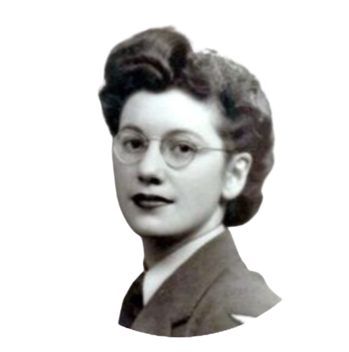

Joan Clarke nació el 24 de junio de 1917 en West Norwood, Inglaterra. Estudiante brillante, ganó una beca para estudiar matemáticas en el Newnham College de Cambridge, donde consiguió el denominado Part I of the Mathematical Tripos (cursos de tres años que llevaban a conseguir una licenciatura) en 1936 acabando el trienio como una “Wrangler” (estudiante con honores). Aunque se sacó el Part II en 1939 y el Part III en 1940, nunca le dieron la tan merecida licenciatura en matemáticas debido a que la Universidad de Cambridge no concedió licenciaturas a mujeres hasta 1948 😡.
|
 |
Joan Clarke llegó a Bletchley Park el 17 de junio de 1940. Al principio fue asignada al denominado grupo de “The Girls” (“Las chicas”), un grupo de mujeres que se dedicaba a trabajos rutinarios de oficina, aunque pronto destacó y fue trasladada a trabajos de desencriptado. En aquella época la criptología era un mundo de hombres, y de hecho, sólo había dos mujeres criptoanalistas en toda la mansión. Joan poseía las cualidades que según Willian F. Friedman, padre de la criptología moderna, debía de tener un buen profesional; capacidad de racionamiento inductivo y deductivo, concentración, perseverancia e imaginación.
|
Eran tales sus habilidades que fue rápidamente fichada para el Hut 8, un grupo liderado por Alan Turing que utilizaba una nueva técnica de descifrado, el Banburismus, como base de decodificación. El objetivo del Hut 8 era el más ambicioso de todos; el descifrado del Enigma Naval (denominado Dolphin), el más complejo de todos los códigos Enigma. Gracias a su brillantez y perseverancia, el equipo de Clarke consiguió su objetivo: romper los códigos Enigma. Algunas estimaciones dicen que aquel descubrimiento redujo la duración de la guerra entre dos y cuatro años y que salvó miles de vidas. La labor de Joan Clarke en Bletchley Park fue reconocida en 1947, cuando la nombraron Miembro del Imperio Británico (MBE).
|